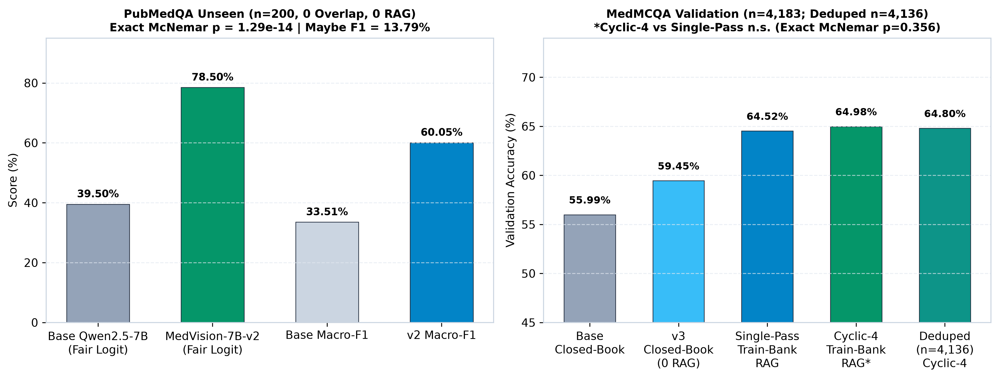
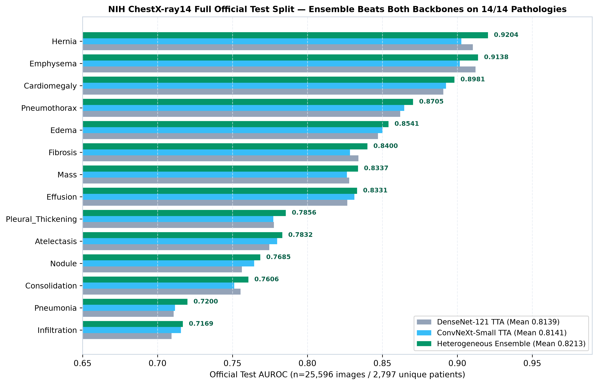
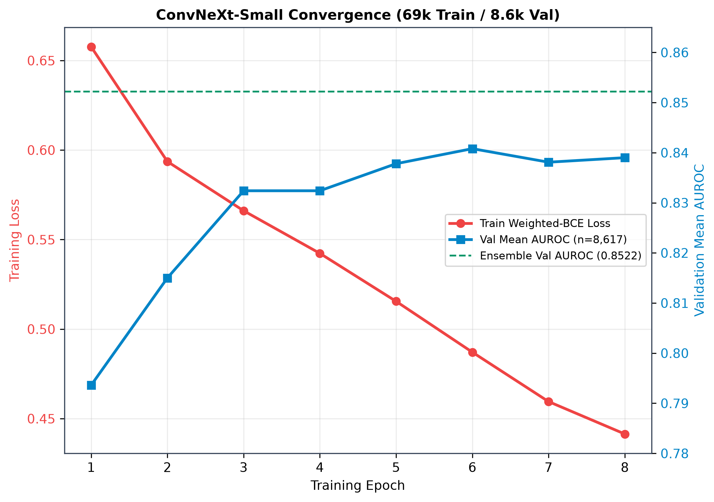
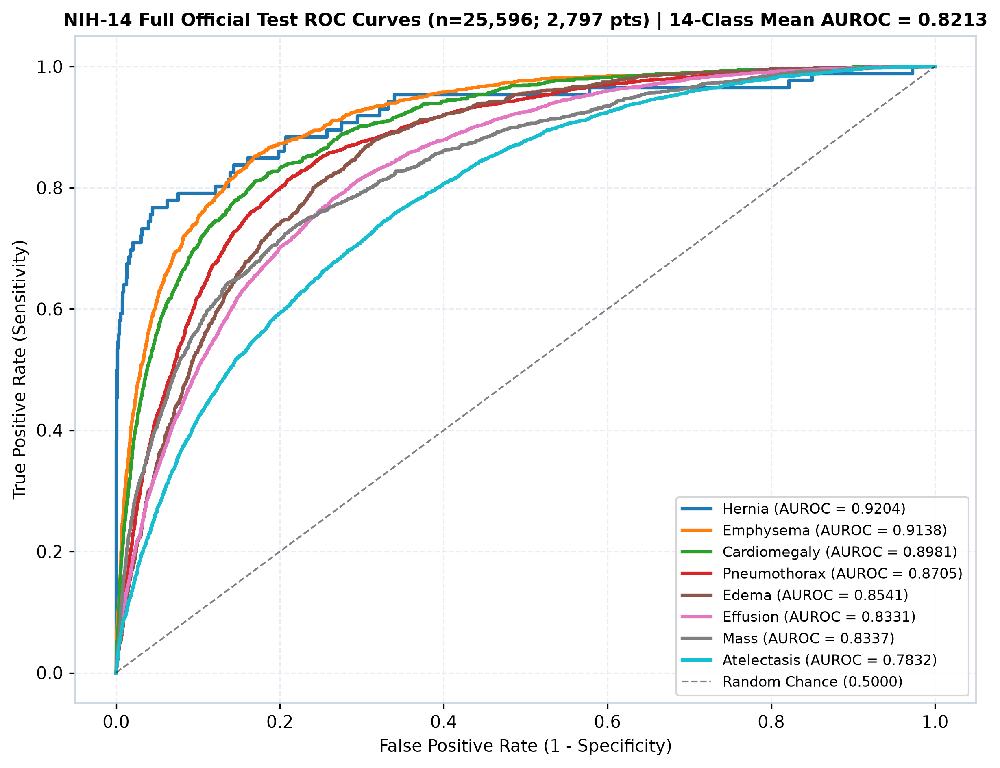
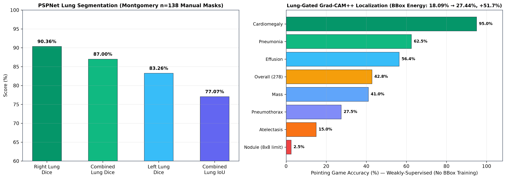
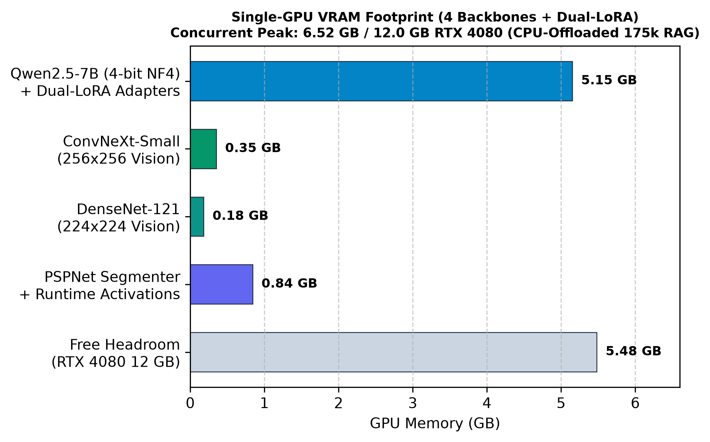
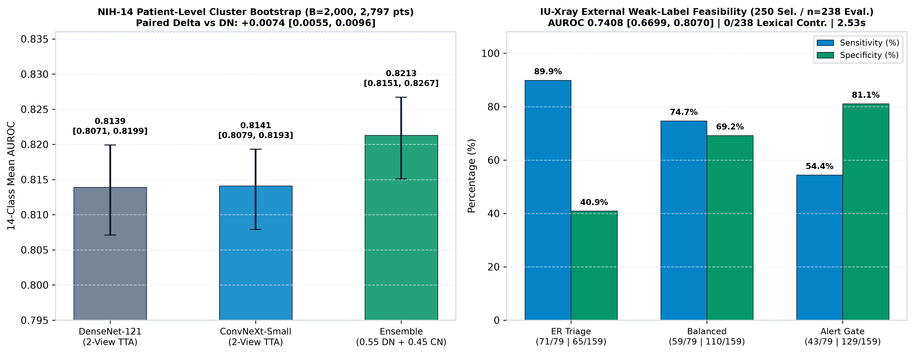

DenseNet-121, ConvNeXt-Small, PSPNet lung segmenter, and 4-bit Qwen2.5-7B with Dual-LoRA adapters) run simultaneously in 6.52 GB VRAM alongside a CPU-offloaded 175,413-passage FAISS + Cross-Encoder RAG, automated OOD non-X-ray Guardrail, Cross-Modal Contradiction Verifier, and SQLite + n8n Continual DPO loop.


| Pathology | DenseNet-121 | ConvNeXt-S | Ensemble AUROC | Sensitivity | Specificity | FPR (Error) | FNR (Miss) |
|---|---|---|---|---|---|---|---|
| Hernia | 0.9104 | 0.9027 | 0.9204 | 79.1% | 91.7% | 8.3% | 20.9% |
| Emphysema | 0.9121 | 0.9016 | 0.9138 | 88.0% | 78.5% | 21.5% | 12.0% |
| Cardiomegaly | 0.8906 | 0.8925 | 0.8981 | 84.8% | 77.2% | 22.8% | 15.2% |
| Pneumothorax | 0.8619 | 0.8646 | 0.8705 | 89.0% | 66.7% | 33.3% | 11.0% |
| Edema | 0.8470 | 0.8501 | 0.8541 | 92.4% | 58.5% | 41.5% | 7.6% |
| Fibrosis | 0.8340 | 0.8284 | 0.8400 | 81.8% | 70.7% | 29.3% | 18.2% |
| Mass | 0.8279 | 0.8263 | 0.8337 | 83.9% | 63.0% | 37.0% | 16.1% |
| Effusion | 0.8266 | 0.8313 | 0.8331 | 88.0% | 59.8% | 40.2% | 12.0% |
| Pleural_Thickening | 0.7776 | 0.7772 | 0.7856 | 83.9% | 57.0% | 43.0% | 16.1% |
| Atelectasis | 0.7745 | 0.7798 | 0.7832 | 83.4% | 56.6% | 43.4% | 16.6% |
| Nodule | 0.7563 | 0.7645 | 0.7685 | 66.1% | 73.0% | 27.0% | 33.9% |
| Consolidation | 0.7554 | 0.7512 | 0.7606 | 89.9% | 44.6% | 55.4% | 10.1% |
| Pneumonia | 0.7107 | 0.7117 | 0.7200 | 76.2% | 56.0% | 44.0% | 23.8% |
| Infiltration | 0.7093 | 0.7156 | 0.7169 | 88.2% | 36.7% | 63.3% | 11.8% |
| MEAN (14 Classes, n=25,596) | 0.8139 | 0.8141 | 0.8213 | 83.9% | 63.6% | 36.4% | 16.1% |





| Benchmark / Audit | Baseline / Reference | MedVision v4.0 | 95% CI / Verification |
|---|---|---|---|
| NIH-14 Official Test (n=25,596; 2,797 pts) | Wang et al. (2017) 0.745 | Yao et al. (2018) 0.761 | Guendel et al. (2018) 0.807 (official split; CheXNet ~0.84 used a random split) | 0.8213 Ensemble (DN 0.8139 / CN 0.8141; 14/14 best) | Patient-Cluster CI [0.8151, 0.8267] | Paired ΔAUROC +0.0074 [+0.0055, +0.0096] vs. DN | Youden's J thresholds & 0.55/0.45 weights tuned strictly on Val (n=8,617) and frozen |
| PubMedQA Held-Out (n=200; 0 RAG; 0 Overlap) | Majority-Class (“yes”) 51.5% | Base Fair Logit 39.50% (Macro-F1 33.51%) | 78.50% Fair Logit (Macro-F1 60.05%) | Wilson CI [72.30, 83.63] | Exact McNemar vs. Base p = 1.29×10−14 | Maybe F1 13.79% |
| MedMCQA Validation (n=4,183; Deduped n=4,136) | Base Closed-Book 55.99% | v3 Closed-Book (0 RAG) 59.45% | 64.52% Single / 64.98% Cyclic-4 (Deduped n=4,136: 64.34% / 64.80%) | Disclosed Train-Bank RAG (Top-3 audit: 40 exact / 13 8-gram / 47 union removed; gold option in ctx 28.19%); Cyclic-4 vs. Single n.s. (p = 0.356) |
| IU-Xray Summarization (n=250 Study/UID-Disjoint) | Base Qwen2.5-7B: 58.08% Micro-F1 / 91.22% Neg. Spec. | 79.32% Micro-F1 / 60.45% Macro-F1 / 97.70% Neg. Spec. | Measured via custom 12-class negation-aware radiology lexicon extractor (not CheXbert/RadGraph); ROUGE-L 63.76% inflated by normal reports |
| External Weak-Label IU-Xray E2E (250 Sel. / n=238 Eval.) | 79 abnormal / 159 normal (report-heuristic; 96/238 vs. Open-I Problems, κ=0.275) | AUROC 0.7408 [0.6699, 0.8070] | ER 89.9/40.9% | Bal. 74.7/69.2% | Alert 54.4/81.1% | Conf. matrices: ER 71/8/65/94, Bal. 59/20/110/49, Alert 43/36/129/30 | CTR>0.50: 37/49 (75.5%) | 0/238 lexical contradictions [0, 1.54%] | 2.53s, 6.52 GB |
shuffle(seed=42)[:250], 0 overlap with radiologist LoRA train), 12 lacked frontal radiographs, yielding n=238 evaluated cases. Binary labels derived from report-impression heuristics disagreed with Open-I Problems annotations on 96/238 (40.34%, Cohen’s κ = 0.275) (acute vs. chronic findings). Accordingly, this is strictly a Weak-Label External Feasibility Evaluation; multi-reader blinded adjudication and multi-center validation (CheXpert/PadChest) are required before clinical claims.0/238 lexical negation contradictions or frontal OOD false rejections yields an exact Clopper–Pearson 95% CI of [0.0%, 1.54%], not a zero population error rate; lexical checks do not substitute for full clinical NLI.89.9% / 40.9%; Balanced: 74.7% / 69.2%; Alert Gate: 54.4% / 81.1%, PPV 58.9%). MedVision AI Studio v4.0 is a Research Prototype & CDSS Proof-of-Concept—not a cleared diagnostic or clinical triage device—and requires prospective multi-center trials and regulatory review prior to clinical use.maybe F1 remains low (13.79%) despite 78.50% accuracy and 60.05% Macro-F1.2.5% Pointing Game); Montgomery manual masks exclude retrocardiac left-lung pixels (Left Dice 83.26% vs Right 90.36%).